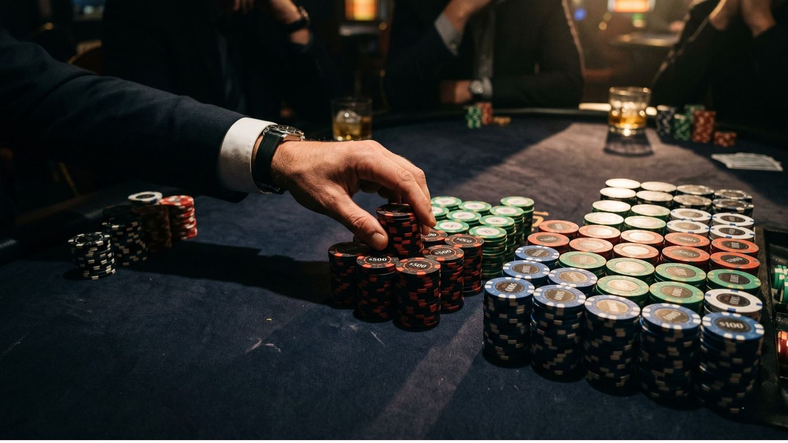
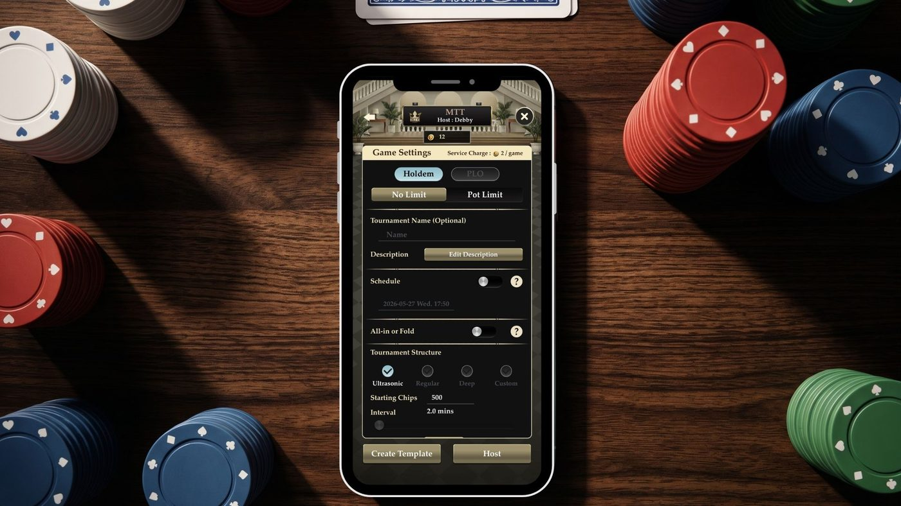

From early-stage survival to final table ICM — plus how to practice before you play.

Quick Answer — What Does It Take to Win at WSOP?
The World Series of Poker rewards three things above all: patience in the early stages, aggression near the bubble, and ICM awareness at the final table. Players who cash consistently don't play every hand — they protect their stack when blinds are low, apply maximum pressure when opponents are afraid to bust, and understand that chip value changes drastically once money is on the line. Whether you're heading to Las Vegas or watching from home, the strategy principles are the same. Practice them in private tournaments on Pokerrrr 2 before you sit down at the felt.
WSOP 2026 — What to Know
The World Series of Poker 2026 runs from May 26 through July 15 at Horseshoe and Paris Las Vegas, featuring 100 bracelet events with buy-ins ranging from $300 to $250,000. The $10,000 Main Event — the flagship event of the summer — kicks off on July 2, with Days 1A through 1D running July 2–5 and the final table forming on July 13.
For players watching from home, WSOP season is the best time to sharpen your tournament game — search interest spikes, strategy content peaks, and the community is most active. Use this window.
Stage-by-Stage Tournament Strategy
Early Levels (M-ratio 20+)
Play fewer hands, but play them in position. The biggest mistake recreational players make at WSOP is trying to accumulate chips in Level 1. Your edge isn't going anywhere — protect it.
- Open raise 2.5–3x from late position with strong hands
- Avoid calling 3-bets out of position with speculative hands
- Let opponents make mistakes; don't manufacture spots
Middle Levels (M-ratio 10–20)
This is where the tournament is won or lost for most players. Antes kick in, the effective cost per orbit increases, and stealing blinds becomes essential.
- Open wider from the button and cutoff — position is money
- 3-bet light against players who fold to aggression
- Track stack sizes at your table; know who's short and who's deep
Bubble Play
The WSOP bubble is where ICM pressure peaks. Medium stacks freeze — exploit them.
- Big stack: Apply relentless pressure on medium stacks who are scared to bust
- Short stack: Look for spots to shove and pick up blinds and antes uncontested
- Medium stack: Tighten significantly; avoid marginal spots unless you have clear equity
Final Table
ICM now governs every decision. A chip lead doesn't mean you should gamble.
- Each elimination increases the value of your remaining chips differently — know the pay jump math
- Target medium stacks laddering for pay jumps, not short stacks
- Heads-up: widen your range dramatically, attack every big blind, and stay aggressive

Key WSOP 2026 Formats — What's Different This Year
WSOP 2026 features 100 events across multiple formats. Understanding each changes your preparation.
| Format | Key Rule Difference | Strategy Shift | On Pokerrrr 2 |
|---|---|---|---|
| No-Limit Hold'em | Standard | Baseline tournament play | ✓ Yes |
| Short Deck (6+ Hold'em) | 2–5 removed; flush beats full house | Tighter hand value reads; more aggression with draws | ✓ Yes |
| Pot-Limit Omaha (PLO) | 4 hole cards; must use exactly 2 | Equity runs closer; nut draws dominate | ✓ Yes |
| Turbo / Super Turbo | Fast-escalating blinds | Push/fold from Level 1; ICM from Level 3 | ✓ "Ultrasonic" structure |
| Bounty / PKO | Cash bonus for eliminating players | Call wider vs. bounty targets; adjust EV math | ✓ Yes |

How to Practice WSOP-Style Tournaments at Home
You don't need to fly to Las Vegas to get tournament reps. Pokerrrr 2 lets you run private tournaments on iOS and Android with fully customizable blind structures — mirror the WSOP escalation schedule exactly.
Set up a WSOP-style home tournament in Pokerrrr 2:
- Open the app → Create Room → Select Tournament mode
- Set starting stack to 20,000 chips (standard WSOP Day 1 structure)
- Set blind levels to 20 minutes (or 30 for a deeper game)
- Invite friends via room code — no public lobby needed
- Run Late Registration for the first 4 levels, just like the real series
Want to simulate a Turbo or Super Turbo event? Switch the Tournament Structure to Ultrasonic — blinds escalate every 2 minutes, forcing push/fold decisions from the first level. It's the fastest way to get high-volume tournament reps in a short session. Hosting a group? Use the Schedule feature to set a fixed start time — players receive the invite in advance and register before the tournament begins, just like a real WSOP event registration.
3 Habits That Separate WSOP Cashes from Early Exits
1. Count your M-ratio every orbit
Know your M = stack ÷ (BB + SB + antes) at all times. When it drops below 15, every decision changes.
2. Know the pay jump before you need it
Look up the payout structure before the bubble. A $500 jump vs. a $5,000 jump at the same player count are completely different decisions.
3. Review one hand per level
After each blind level, mentally replay the biggest pot you played. Did you consider your opponent's range, or just your own cards? WSOP success is about modeling opponents — practice this in every session.
WSOP 2026 FAQ
- WSOP 2026 began on May 26, 2026 at Horseshoe and Paris Las Vegas, running through July 15. The $10,000 Main Event starts July 2, with the final table set for July 13. Full schedule at wsop.com.
- WSOP 2026 features 100 bracelet events with buy-ins ranging from $300 to $250,000, covering formats including No-Limit Hold'em, PLO, Short Deck, Razz, and mixed games.
- The most effective method is to play private tournament formats on a mobile poker app with real blind structures. Pokerrrr 2 supports customizable tournament rooms where you can simulate WSOP-style escalating blinds, antes, and late registration — on iOS or Android, with friends or against the global community.
- Pokerrrr 2 is one of the few mobile apps that supports full tournament structures in private rooms — including Short Deck, PLO, and bounty formats that appear on the WSOP 2026 schedule. You control blind levels, starting stacks, and payout structure, making it the closest thing to real tournament prep available on mobile.
- No. Pokerrrr 2 handles all chip counting, blind escalation, and dealer rotation automatically. Create a room, share the code, and you're running a structured tournament within 60 seconds.
WSOP 2026 is the biggest stage in poker. Whether your goal is a bracelet, a cash, or simply playing better than last year — tournament reps matter more than theory.
Set up your first Pokerrrr 2 tournament tonight. Same formats. Same pressure. Real improvement.